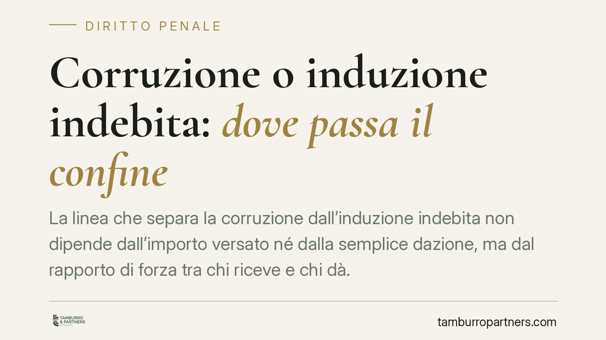

Corruzione o induzione indebita: dove passa il confine
La linea che separa la corruzione dall'induzione indebita non dipende dall'importo versato né dalla semplice dazione, ma dal rapporto di forza tra chi riceve e chi dà. Un principio con ricadute concrete sulla pena e sulla posizione del privato. Analizziamo i criteri di qualificazione e il peso di una prova viziata nel quadro complessivo.

Il confine tra corruzione e induzione indebita
Qualificare un fatto come corruzione o come induzione indebita (il reato previsto dall'art. 319-quater c.p.) non è un esercizio formale. Cambia l'impianto accusatorio, cambia la pena e cambia, soprattutto, la posizione del privato, che nella corruzione è coimputato e nell'induzione indebita è punito in modo autonomo e meno grave.
Il criterio distintivo non sta nell'entità di quanto versato — mille euro o una cena hanno lo stesso peso concettuale — ma nella dinamica relazionale tra pubblico ufficiale e privato. È il rapporto di forza a orientare la qualificazione.
Inquadramento normativo
La materia ruota attorno a tre figure.
La concussione (art. 317 c.p.) presuppone una vera e propria *costrizione*: il pubblico ufficiale abusa della sua qualità e piega la volontà del privato, che subisce. Il privato è solo vittima.
L'induzione indebita (art. 319-quater c.p.) descrive una zona intermedia. Il pubblico ufficiale *induce* il privato a dare o promettere denaro o altra utilità. Qui il privato conserva un margine di scelta e trae, almeno in parte, un vantaggio proprio: per questo è punito, seppure con pena contenuta.
La corruzione (artt. 318, 319 e 321 c.p.) presuppone invece un accordo *tra pari*. Non c'è prevaricazione: c'è un incontro di volontà su un mercimonio della funzione pubblica, da cui entrambi i contraenti traggono beneficio.
Il punto di equilibrio è stato fissato dalle Sezioni Unite con la sentenza n. 12228 del 2014 (ric. Maldera), che ha chiarito il criterio della *costrizione* contrapposta all'*induzione*: la prima comprime la libertà di autodeterminazione, la seconda la condiziona lasciando spazio a una decisione interessata del privato. Dove manca qualsiasi pressione prevaricatrice e si registra un accordo paritario, si ricade nella corruzione.
Il peso della prova viziata
Un secondo profilo di interesse riguarda la sorte di una condanna quando una singola fonte di prova — tipicamente un'intercettazione — viene dichiarata inutilizzabile.
La giurisprudenza applica da tempo la cosiddetta prova di resistenza: occorre verificare se, eliminata idealmente la prova viziata, il residuo quadro probatorio regga comunque in modo autonomo. Se gli altri elementi sono convergenti e sufficienti, l'inutilizzabilità di un'intercettazione non travolge la decisione. In caso contrario, la condanna cade.
È un principio che sposta l'attenzione dalla singola captazione all'intero compendio accusatorio, e che impone alla difesa una lettura d'insieme, non frammentaria, del fascicolo.
Implicazioni pratiche
Per chi è coinvolto in un procedimento, la qualificazione non è un dettaglio accademico. Essere accusati di corruzione significa rispondere come contraente di un patto illecito; essere accusati di induzione indebita significa poter far valere la propria posizione soggetta a condizionamento. La differenza incide sulla strategia difensiva fin dalle prime fasi.
Il profilo interessa anche imprese ed enti. La corruzione rientra tra i reati presupposto della responsabilità amministrativa degli enti ex d.lgs. 231/2001: una condotta riconducibile all'interesse o al vantaggio dell'ente può attivare un procedimento a suo carico, con sanzioni pecuniarie e interdittive. La corretta qualificazione del fatto si riflette quindi anche sulla posizione della società.
Cosa fare in concreto
- Ricostruire con precisione la dinamica relazionale tra le parti: chi ha preso l'iniziativa, se vi è stata pressione, quale vantaggio ha tratto il privato.
- Esaminare l'intero compendio probatorio, non la singola fonte, per valutare la tenuta dell'accusa alla luce della prova di resistenza.
- Verificare l'utilizzabilità di intercettazioni e tabulati, controllando autorizzazioni, motivazione e presupposti.
- Per le imprese, controllare l'adeguatezza del modello organizzativo 231 e la mappatura delle aree a rischio corruzione.
- Ricordare che la qualificazione giuridica si costruisce sui fatti concreti del singolo caso, non su schemi astratti.
*Contributo informativo a cura di Tamburro & Partners - Avv. Giuseppe Tamburro. Non costituisce parere legale.*
Ogni condominio ha una storia a sé.
Se gestisci un'amministrazione e vuoi un confronto su una specifica questione condominiale, scrivi allo studio. Ti rispondiamo entro un giorno lavorativo.